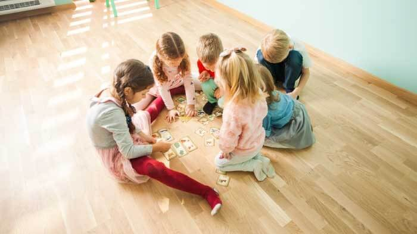

Best Memory Matching Games
Animal Card Match Game
This memory matching game for kids improve visual memory, sustained attention, and visual recognition skills.
Christmas Matching Game for Kids
This memory match card game improvesshort-term memory, visual attention, and naming skills.
Color Memory Match Game
This matching pairs memory game improves short-term memory, sustained attention, and aural memory skills
Irregular Verbs Match Game
This memory matching game improves short-term memory, verbal memory, and sustained attention skills.
Face Matching Game
This matching pairs memory game improves visual memory, verbal memory, and visual attention skills.
Match Instruments
This memory matching game online improves visual memory, aural memory, and decision-making skills
Match Bird Sounds
This memory card game for 4-year-olds improve visual memory, aural memory, and decision-making skills.
Match Country On Map
This matching pairs game improves visual memory, spatial memory, and long-term memory skills.
Recommended: Ready to challenge yourself? Take Our Online Photographic Memory Test
Messy Room
Visual exercise develops visual attention, visual tracking, and comparison skills in children.
Matching Game for Kids
The game "Have I Seen It or Not?" helps develop skills such as visual memory, sustained attention, and visual recognition.
Memory Cards
Memory Cards exercise develops children's visual scanning, planning, and spatial memory skills.
Number Matching Game
Children's short-term memory and sustained attention skills improve and benefit the growth process with the Remember the Numbers exercise.
Kids Color Matching Game
Color Codes game supports the development of attention skills such as divided attention, reaction control, and focus in children.
Memory Card Matching Game
Find the Pairs game helps children develop visual attention, visual scanning, and comparison skills.
Memory Matching Game Online
Find the Squares memory exercise supports the positive development of children's spatial memory and short-term memory.
Why Is Teaching Kids Matching Games With Colors Important?
Even at an early age, educational competition games for kids are extremely beneficial for your children. Today, the gamification method allows your kids to improve their cognitive skills and imagination as they have fun thanks to games to play with kids. And matching kids games are indispensable for their development starting from an early age since they are the key to improving their attention, concentration, and memory.
In this article, we are going to discover the best memory matching games online, the benefits for kids, and how to play them. Let's dive in!
Why Are Matching Games Good for Kids?
Matching games are essential learning games for toddlers and children to develop their cognitive skills. From pairing games to spotting the different cards, they require serious concentration while challenging kids' short memory.
Matching games for kids free are not only useful in terms of their success at school, but also boost the skills necessary in daily life. Hence, it is important to start playing them regularly from a very young age. And online matching games for kids are also great activities for children and parents to have fun together!
Now let's discover the benefits of memory matching games that help your kids to learn as they play:
- improving short-term and visual memory
- enhancing concentration skills and attention to detail
- boosting listening skills
- developing the ability to find differences in objects
- successfully pairing objects with similar traits
- helping to focus something in a particular time by empowering selective attention.
What Skills Do Matching Card Games Help Kids Develop?
First of all, matching games such as ABC matching games for kids, matching color games for kids, or letter sound games, challenge short-term memory skills and help improve function in this area. And short-term memory skills are actually linked to long-term memory skills.
In matching memory games, kids need to plan their moves as they use their short-term memory skills. In this way, they can also boost their critical thinking skills while they plan their next move.
Moreover, matching games for kids online will not only improve their visual skills but also their ability to distinguish objects from one another. Because as kids play, they need to focus on the visual details to remember and concentrate as they listen to your instructions. And this is how matching games enhance your children's memory.
How to Play the Matching Games Kids Instructions?
There are many alternatives to playing matching games for kids. You can even create customized versions with your family photos! Or they can include words you choose and other content to make a unique family game as you teach your children essential game-playing skills.
Matching card games such as matching colors games focus on different skills ranging from counting, number recognition, pairing objects, color recognition, and even vocabulary In addition, with MentalUP letter recognition games, children's ability to recognize and match letters develops.
You only need a deck of matching pair cards and game rules to improve your kid's memory, visual recognition, and concentration skills. With memory games, you can help your kids learn as they have fun at any age. Here you can find how you can play matching games online for kids:
How to Play the Matching Games Kids?

- Shuffle the cards and spread them face down across the table.
- Ask your kids to take turns to turn over two cards, searching for a matching pair.
- If the two cards they selected are matching, then the player keeps the pair and turns another two. If they are not matching, the cards are turned over again, in the same location, and the next player takes the turn.
- The key to success is related to kids remembering where all the cards were in the previous rounds. Once all the deck is matched, the player with the most pairs wins the game!
Kids love—parents trust. Named among the best in family-friendly products by U.S. Teachers and Moms.
The convenience of MentalUP’s content to the UK curriculum has been proved by the Education Alliance Finland.
MentalUP has been qualified to get EVIDENCE of IMPACT Award by University College London for its academic contribution.
Loved by over 10 million users. Join millions of parents, teachers, and kids all around the world.
It’s a safe, fun world for kids. There are no ads or inappropriate content either.

Why MentalUP Brain Games?
Trusted by World Leading Communities
We recommend the MentalUP which is developed by academicians and pedagogues and is filled with educational brain teasers.

MentalUP Educational Games will enable your child to use technology in a beneficial way.

MentalUP is an online innovative games resources for teachers and parents.

MentalUP does brain training well. Its games are easy to understand while challenging the skills which they are designed to stretch.

MentalUP is a UK-based award-winning scientific-educational application containing cognitive learning games for K-8 learners.

MentalUP developed by game designers and academics incorporating innovative teaching methods to offer dozens of mind games.

FEATURES OF THE EDUCATIONAL GAMES
- PERSONALIZED MEMORY MATCHING GAMES
- EFFICIENT WAY OF MENTAL DEVELOPMENT
- BOTH SCIENTIFIC AND ENTERTAINING
BENEFITS OF MENTALUP
- INCREASES ATTENTION
- IMPROVES MEMORY
- DEVELOPS THINKING SKILLS